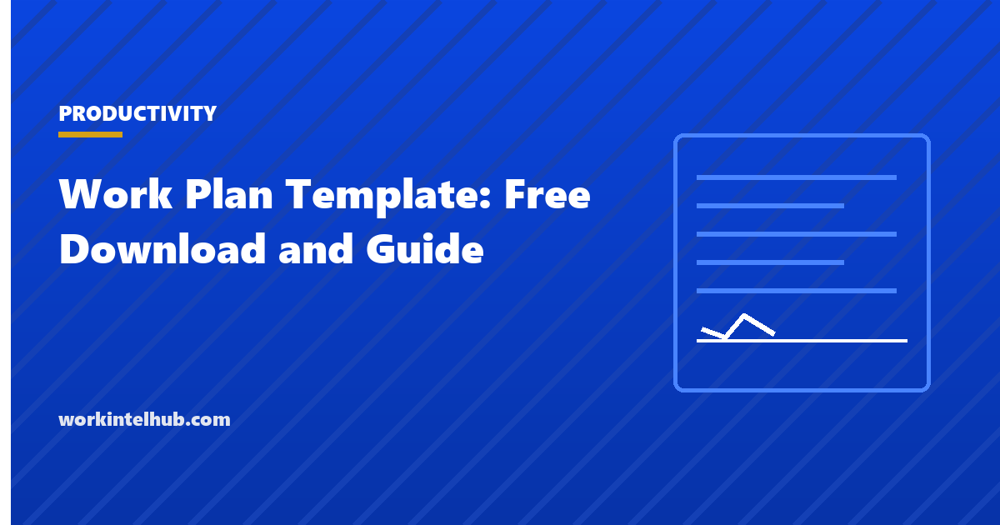

Work Plan Template: Free Download and Guide

A work plan is the simplest planning document that still works: goals, the activities that achieve them, who is responsible, when each happens and how you will know it is done. It is what a team writes when a full project plan is too heavy and a to-do list is too light, and it is the format funders, boards and programme offices most often ask for because it fits on two pages and can be checked.
Four versions are here: a project work plan, a team work plan for a quarter, an individual work plan for a role or a new starter, and a grant or programme work plan in the format funders expect, with outputs and indicators. The Excel workbook tracks activities with status and progress; Word and PDF carry the narrative and the signature page.
Download the templates
Free files: Word, Excel and PDF
Three files, free, no email required. Word to edit, Excel to track, PDF to print or share.
Templates open in Microsoft Word, Excel, Google Docs and Sheets, LibreOffice and any PDF reader. Free to use and adapt for your organisation.
The four versions
| Version | Rows are | Horizon | Reviewed |
|---|---|---|---|
| Project | Activities under objectives | Project length | Weekly |
| Team quarter | Activities under three priorities | Quarter | Weekly |
| Individual | Responsibilities and goals | Quarter to year | Monthly one-on-one |
| Grant or programme | Activities under outputs, with indicators | Funding period | Quarterly report |
Writing a work plan that gets executed
Start from the goal and work down: what objectives achieve it, what activities achieve each objective, who is responsible for each activity (one name), and what the output is. The output column is the one that distinguishes a work plan from a wish list: "draft policy circulated for comment" can be checked; "work on policy" cannot. Dates are start and end, not just end, because an activity that has not started by its start date is the earliest warning you get.
Keep it to the activities that matter. A work plan with sixty rows is a schedule and needs the schedule templates; a work plan with ten to twenty rows is readable by the people who have to deliver it. The operational plan is the layer above, and the 30-60-90 day plan is the individual version for a new role.
Work plans for funders
Grant and programme funders want the same structure with their vocabulary: outputs (what is produced), indicators (how it is measured), targets, and the quarter each activity happens in, linked to budget lines. The grant sheet carries those columns and calculates achievement against target, which is the figure the quarterly report needs. Agree indicators with the funder before the work starts; changing them later reads as moving the goalposts.
Reviewing the plan
- Weekly for projects and teams: update status and percentage, note what is late and why.
- Monthly for individuals, in the one-on-one, with the support-needed column as the agenda.
- Quarterly for programmes, with the indicator table as the report.
- When an activity is late twice, change the plan, not the status colour.
- Close the plan with a short note on what was achieved against the goal; it is the input to the next plan.
Key takeaways
- A work plan is goals, activities, one responsible person each, start and end dates, and an output that can be checked.
- Ten to twenty rows; more is a schedule.
- Funders want outputs, indicators, targets and quarters; agree indicators first.
- Review weekly, change the plan when an activity is late twice.
Frequently asked questions
What is a work plan?
A short planning document that lists the goal, the objectives and activities that achieve it, who is responsible for each, when it starts and ends, and the output that shows it is done. It is lighter than a project plan and heavier than a task list, and it is the format most funders and boards ask for.
What is the difference between a work plan and a project plan?
A project plan is a set of documents: work breakdown, schedule with dependencies, budget, risks, communication and roles. A work plan is one table of activities with owners, dates and outputs. Use a work plan for small projects, team quarters and funded programmes; use a project plan when dependencies and budgets need managing.
How detailed should a work plan be?
Ten to twenty activities for a quarter or a small project, each with one responsible person and a checkable output. If you need sixty rows, the work needs a schedule rather than a work plan.
What should a grant work plan include?
Outputs, the activities that produce them, an indicator and target for each, the responsible person, the quarter each activity happens, and the budget line it draws on. Achievement against target is reported each quarter.
How often should a work plan be updated?
Weekly for project and team plans, monthly for individual plans in the one-on-one, and quarterly for programme plans against the funder's reporting cycle.